Pháp Sư (Mage)
TỔNG QUAN
Một pháp sư tầm xa gây sát thương phép thuật cực lớn và hỗ trợ đồng đội bằng hồi máu, khống chế và triệu hồi.
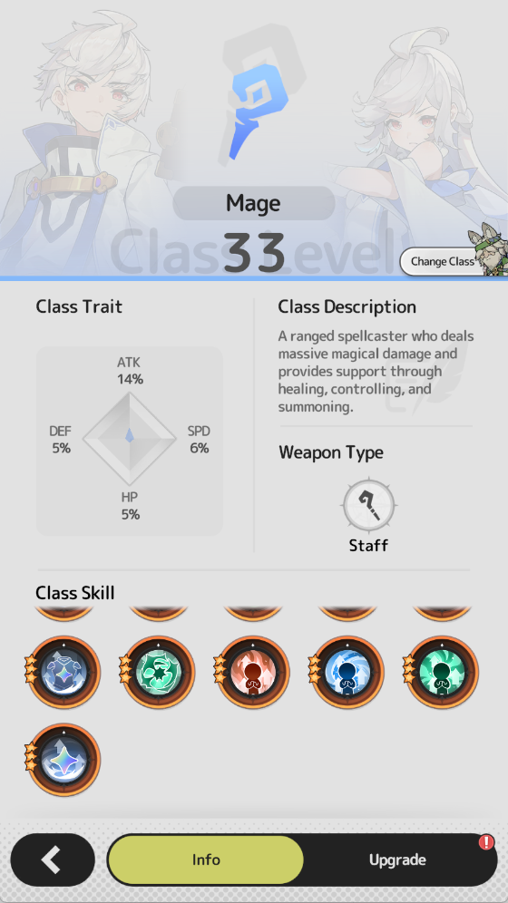
Kỹ Thuật Pháp Sư (Mage)
| Biểu tượng | Tên | Loại | Mô tả | Hình ảnh |
|---|---|---|---|---|

|
Water Shot | Sát Thương | Gây Sát Thương Nước 1 lần lên 1 kẻ địch trong phạm vi 4 ô quanh người thi triển. | 
|
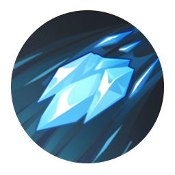 |
Ice Spike | Sát Thương, Trạng Thái Bất Lợi | Gây Sát Thương Nước 1 lần lên tất cả kẻ địch trong khu vực 1x5 ô phía trước người thi triển, với 40% tỉ lệ cơ bản gây Đóng Băng trong 1 lượt. | 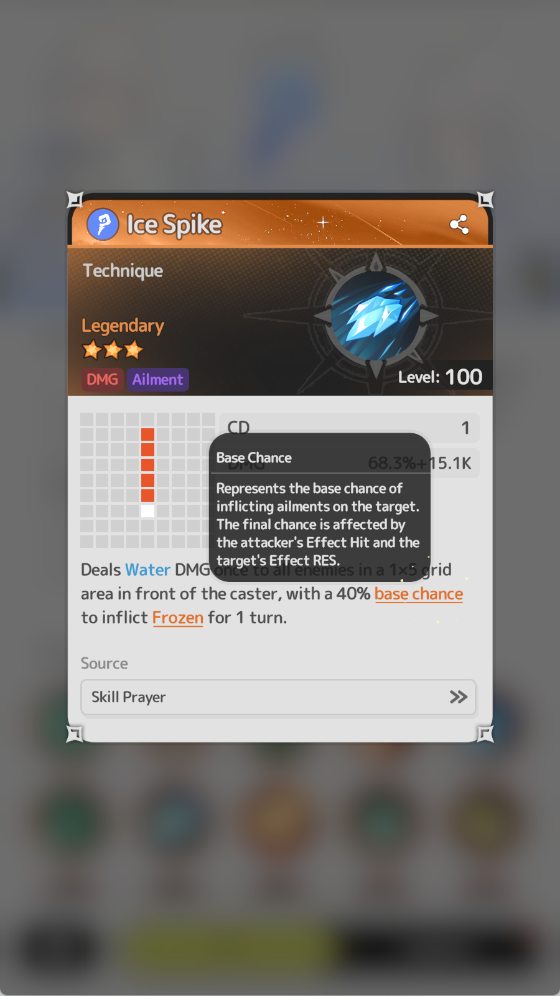 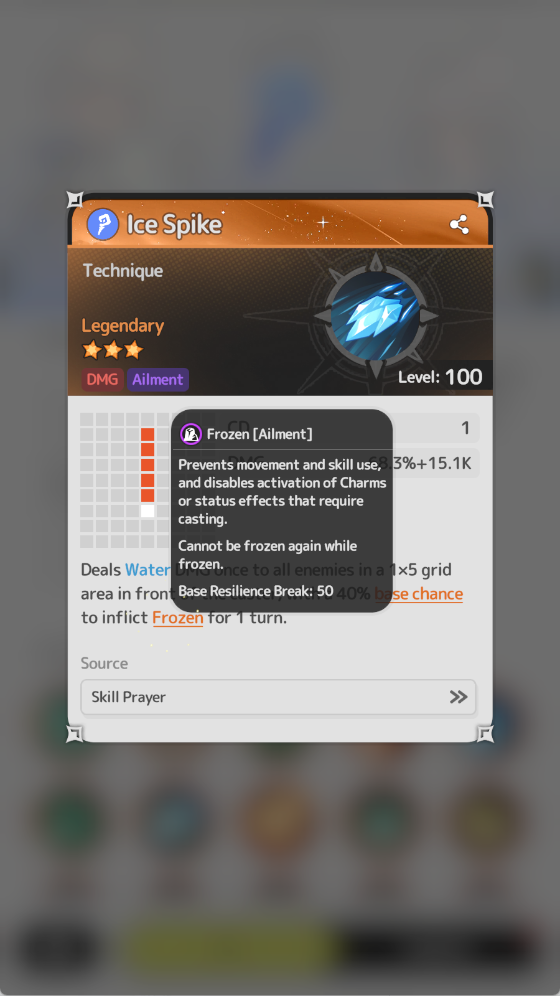 |
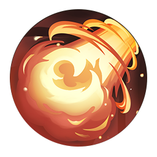 |
Flame Jet | Sát Thương | Gây Sát Thương Lửa 3 lần lên tất cả kẻ địch trong khu vực 1×3 ô phía trước người thi triển. | |
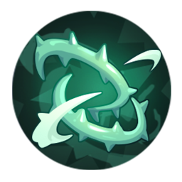 |
Iron Thorn | Sát Thương, Trạng Thái Bất Lợi | Chọn 1 ô trong phạm vi 3 ô quanh người thi triển. Gây Sát Thương Gió 1 lần lên tất cả kẻ địch trong phạm vi 1 ô quanh ô mục tiêu, với 30% tỉ lệ cơ bản gây Bất Động trong 1 lượt. | |

|
Healing Touch | Đồng Minh, Hồi Máu, Giải Trừ | Hồi máu cho 1 đồng minh trong phạm vi 5 ô quanh người thi triển và giải trừ 1 trạng thái bất lợi hoặc debuff ngẫu nhiên trên người họ. | |
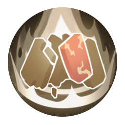 |
Stonechief Summon | Triệu Hồi | Triệu hồi một Stonechief phía trước người thi triển, nó hành động ngay lập tức. Triệu hồi vật thừa hưởng một tỉ lệ chỉ số của người thi triển và tồn tại tối đa 5 lượt. (Không có hồi chiêu ban đầu) | |

|
Fireball | Sát Thương | Chọn 1 ô trong phạm vi 5 ô quanh người thi triển. Gây Sát Thương Lửa 1 lần lên tất cả kẻ địch trong hình vuông 1 ô quanh ô mục tiêu. | |
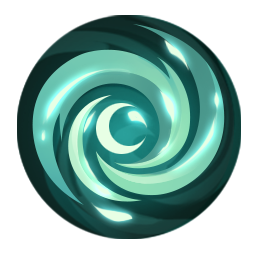 |
Cyclone | Kéo | Chọn 1 ô trong phạm vi 6 ô quanh người thi triển. Gây Sát Thương Gió 1 lần lên tất cả kẻ địch trong phạm vi 2 ô quanh ô mục tiêu, hất tung chúng và kéo chúng về ô mục tiêu. | |

|
Tempest Sphere | Sát Thương | Gây Sát Thương Gió 5 lần lên 1 kẻ địch trong phạm vi 3 đến 5 ô quanh người thi triển. | |
| Void Blessing | Đồng Minh, Buff, Hồi Máu | Tăng HP. | ||
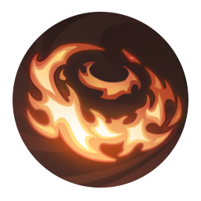 |
Blazing Fire Ring | Sát Thương | Gây Sát Thương Lửa 1 lần lên tất cả kẻ địch trong phạm vi 2 ô quanh người thi triển. | |
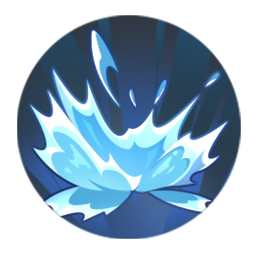 |
Water Assault | Sát Thương | Gây Sát Thương Nước 1 lần lên tất cả kẻ địch trong khu vực 3×4 ô phía trước người thi triển. Sát thương giảm 25% với mỗi đòn trúng tiếp theo lên cùng một mục tiêu. (Gây sát thương nhiều đòn lên mục tiêu lớn.) | |
 |
Wind's Delight | Sát Thương | Chọn 1 ô trong phạm vi 6 ô quanh người thi triển. Phóng 7 đợt lưỡi đao gió vào ô mục tiêu và các kẻ địch ngẫu nhiên trong phạm vi 1 ô ở bên trái và bên phải ô mục tiêu. Mỗi đợt gây Sát Thương Gió 1 lần lên tất cả kẻ địch trong phạm vi 1 ô quanh mục tiêu địch. Sát thương giảm 35% với mỗi đòn trúng tiếp theo lên cùng một mục tiêu. |
Bùa Pháp Sư (Mage)
| Biểu tượng | Tên | Loại | Mô tả | Hình ảnh |
|---|---|---|---|---|

|
Elemental Mystery | Chỉ Số | Tăng Thông Thạo Nguyên Tố của người thi triển. | 
|
| Wind's Whisper | Chỉ Số | Tăng Sát Thương Gió của người thi triển. | 
| |

|
Dew's Blessing | Chỉ Số | Tăng Sát Thương Nước của người thi triển. | |
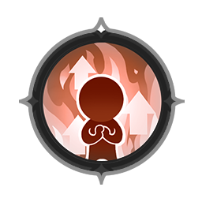 |
Heart of Flame | Chỉ Số | Tăng Sát Thương Lửa của người thi triển. | |
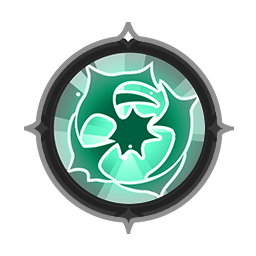 |
Unstable Aura | Sát Thương, Đẩy Lùi | Khi Kỹ Thuật của người thi triển gây sát thương lên kẻ địch, có 25% tỉ lệ kích hoạt Aura, gây thêm Sát Thương Gió 1 lần, với 60% tỉ lệ cơ bản đẩy lùi chúng 1 ô. | |

|
Elemental Body | Chỉ Số | Tăng Kháng Nguyên Tố của người thi triển. | |

|
Curse Resonance | Buff | Với mỗi trạng thái bất lợi hoặc debuff mà mục tiêu đang mang, Sát Thương Kỹ Thuật mà người thi triển gây lên mục tiêu đó tăng lên. Cộng dồn tối đa 3 lần. | |
| Insight | Chỉ Số | Tăng Tỉ Lệ Trúng Hiệu Ứng của người thi triển. | ||
| Tough Soul | Chỉ Số | Tăng HP của người thi triển. | ||
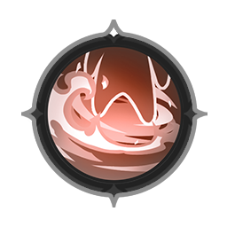 |
Flaming Path | Thiêu Đốt | Khi người thi triển bắt đầu di chuyển trong lượt của mình, có 30% tỉ lệ gây Thiêu Đốt lên các ô trong phạm vi 1 ô quanh người thi triển. | |

|
Water to Ice | Chỉ Số | Tăng Sát Thương Nước của người thi triển. | |
| Mana Surge | Chỉ Số | Tăng Tỉ Lệ Chí Mạng của người thi triển. | ||

|
Gale Shield | Khiên, Đẩy Lùi | Ban một khiên dựa trên HP tối đa của người thi triển khi bắt đầu trận đấu. Khi khiên biến mất, gây Sát Thương Gió 1 lần lên tất cả kẻ địch trong khu vực hình vuông 1 ô quanh người thi triển, với 100% tỉ lệ cơ bản đẩy lùi chúng 1 ô. |